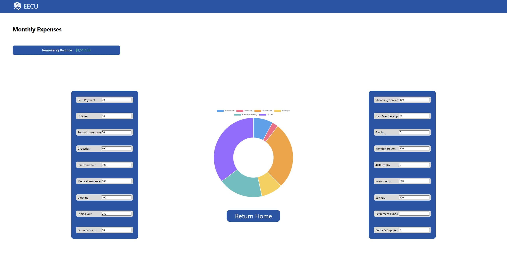
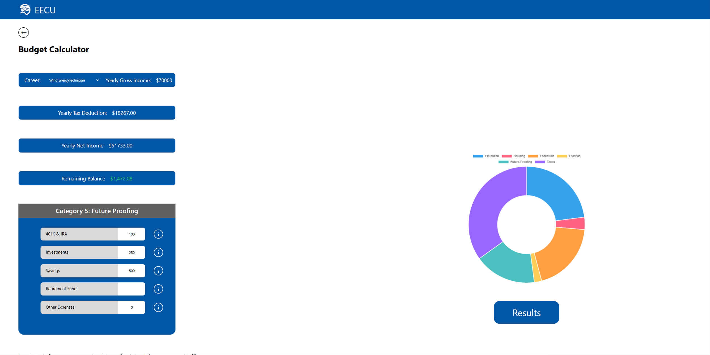

Here is a snapshot of some of the pages you can access via desktop.
Web Developer • UX Designer
Project Manager • Web Developer • UX Designer

Mateo Siechert & CART Colleagues

Here is a snapshot of some of the pages you can access via desktop.
This application allows a user to calculate their monthly expenses and find out if they are over budget or under budget, depending on the career they select. Every career has a different net income, which is the fundamental reason this budget calculator was created.
QR Code to access EECU Budget Calculator